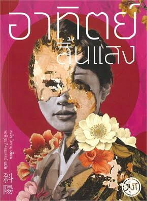

อาทิตย์สิ้นแสง
"แม้ในวันที่ไร้แสงสว่าง ชีวิตที่เหลืออยู่ จึงมีไว้เพื่อดิ้นรน"
ผลงานชิ้นเอกอีกเล่มของ ดาไซ โอซามุ ที่ฉายภาพการล่มสลายของยุคสมัยได้อย่างงดงามและรวดร้าวที่สุด เล่มนี้เปรียบเสมือนหมุดหมายสำคัญที่ทำให้เกิดคำว่า ชะโยโชกุ หรือ "ชนชั้นอาทิตย์สิ้นแสง" ซึ่งใช้เรียกกลุ่มชนชั้นสูงที่สูญเสียทุกอย่างหลังสงครามโลกครั้งที่ 2
เนื้อเรื่องย่อ
เรื่องราวเล่าผ่านบันทึกของ คาซุโกะ หญิงสาวผู้เกิดในตระกูลขุนนางชนชั้นสูงของญี่ปุ่น หลังสงครามโลกครั้งที่ 2 สิ้นสุดลง ระบบขุนนางถูกยกเลิก ครอบครัวของเธอต้องสูญเสียยศถาบรรดาศักดิ์ ทรัพย์สิน และความเกรียงไกรไปในพริบตา จนต้องย้ายออกจากบ้านหรูในโตเกียวไปอาศัยอยู่ในบ้านหลังเล็กๆ นอกเมือง ท่ามกลางความตกอับ คาซุโกะต้องคอยดูแล ท่านแม่ ผู้เป็นสัญลักษณ์คนสุดท้ายของความสง่างามและความบริสุทธิ์แบบโลกใบเก่าที่กำลังร่วงโรย ขณะเดียวกัน นาโอจิ น้องชายของเธอที่เพิ่งกลับจากสงคราม ก็ต้องเผชิญกับความแตกสลายภายในจิตใจ จนจมลงสู่โลกของเหล้า ยาเสพติด เมื่อโลกใบเดิมที่เคยรู้จักพังทลายลงเรื่อยๆ และความตายเริ่มคืบคลานเข้ามา คาซุโกะจึงต้องเลือกระหว่างการปล่อยให้ตัวเองดับสูญไปตามอดีตอันเปราะบาง หรือจะยอม "ลุกขึ้นสู้" โดยทอดทิ้งกรอบประเพณีเดิมๆ เพื่อไขว่คว้าความรัก อิสรภาพ และความหมายของการมีชีวิตอยู่ด้วยมือของเธอเอง
หนังสือเล่มนี้เหมาะกับใคร
คนที่กำลังเผชิญจุดเปลี่ยนชีวิต ความผิดหวัง
อาทิตย์สิ้นแสงทำให้คุณเห็นภาพการ ยอมรับความจริง ลุกขึ้นสู้ต่อโชคชะตา และก้าวผ่านความเจ็บปวดไปได้
คนที่ต้องการแรงบันดาลใจในการเริ่มต้นใหม่
ตัวละครหลักจะมอบแรงบันดาลใจให้คุณลุกขึ้นมา ขีดเขียนเส้นทางชีวิตใหม่ด้วยมือตัวเอง แม้จะต้องท้าทายกรอบเดิมๆ ของสังคมก็ตาม
คนที่อยากเสพภาษาอันเป็นเอกลักษณ์
ภาษาที่ประณีต สวยงาม และเต็มไปด้วยมิติทางอารมณ์ในการอธิบายการร่วงโรยของชีวิต ทำให้ความโศกเศร้าและความพังทลายในเรื่องไม่ได้ดูหม่นหมองจนน่าอึดอัด แต่กลับมีความงดงาม จับใจ และทิ้งรสชาติอันลึกซึ้งไว้
ได้อะไรจากการอ่านหนังเสือเล่มนี้?
การอ่านหนังสือเล่มนี้จะช่วยให้คุณได้ตกผลึกและเข้าใจการยอมรับความจริง พร้อมทั้งมอบแรงบันดาลใจจากตัวละครที่ไม่ยอมจำนนต่อโชคชะตา แต่เลือกที่จะลุกขึ้นสู้ นอกจากนี้ยังช่วยให้คุณได้เสพงานเขียนภาษาประณีตงดงามที่ถ่ายทอดความเศร้าได้อย่างจับใจ แต่กลับทิ้งความรู้สึกอบอุ่นและประกายความหวังไว้ในใจอย่างน่าประหลาด
ต้องเคยอ่านงานของดาไซ โอซามุ มาก่อนรึเปล่า?
ไม่จำเป็นเพราะ "อาทิตย์สิ้นแสง" เป็นงานที่ เรียบเรียงเนื้อหาออกมา อ่านง่าย เนื้อหาไม่ซับซ้อนและมีตอนจบที่ดี แตกต่างจากภาพจำทั่วไปของ ดาไซ โอซามุที่มักจะหม่นหมอง ดำดิ่ง หรือสิ้นหวังสุดขั้วอย่างเรื่อง สูญสิ้นความเป็นคน